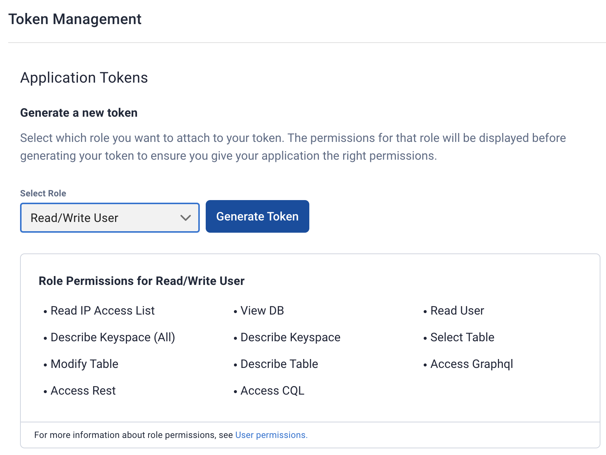

Create the target environment for your migration
In this topic, we’ll use a DataStax Astra DB serverless database as the Target cluster. However, you can choose a different target such as a more recent release of Cassandra 4.0.x or DSE 6.8.x.
Overview
-
Create an Astra DB serverless cluster
-
Retrieve its Secure Connect Bundle (SCB) and upload it to the client instances
-
Create Astra DB access credentials for the cluster
-
Create the client application schema
Prerequisites
-
Access to Astra console on astra.datastax.com.
-
DataStax Bulk Migrator, as installed in the prior topic.
Create an Astra DB serverless cluster
Log into the Astra console and create a Serverless Astra DB database. You can start with a Free plan, but consider upgrading during your Origin to Target migration project to am Astra DB Pay As You Go (PAYG) or Enterprise plan, to take advantage of additional functionality — such as Exporting Metrics to external third-party apps, Bring Your Own Keys, and other features.
Assign your preferred valus for the serverless database:
-
Name
-
Keyspace - this is a handle that establishes the database’s context in subsequent DDL and DML statements
-
Cloud provider:
AWSis used in this guide’s example; however you can choose your preferred cloud provider -
Region: choose your geographically preferred region - you can subsequently add more regions
When the Astra DB reaches Active status, perform the following steps in an Astra DB user account. Create an IAM token with the "Read/Write User" role. This role will be used by the application, the ZDM proxy, and the ZDM automation.
In Astra console, choose Organization Settings (upper left) from the drop-down menu, and then Token Management. Select the Read/Write User role:

Then click Generate Token. Astra console displays the generated values. Example:

Save all credentials (Client ID, Client Secret, and Token) in a clearly named file. For example, you can save all three parts of the new credentials to a file called zdm_demo_readwrite_user and store it safely.
For more information about role permissions, see User permissions in the Astra DB documentation.
Get the Secure Connect Bundle and upload to client instances
Your cluster’s Secure Connect Bundle (SCB) will be needed by:
-
Your client application (
NoSQLBenchin this example), to connect directly to Astra at the end of the migration -
The DataStax Bulk Migrator to import the existing data into Astra
With the Astra DB in an Active status, download its SCB from Astra console. It’s a zip file that contains the security certificates and credentials for your database.
-
In Astra console, go to the Dashboard and select the serverless database that you created in the prior step.
-
Click on Connect
-
Select the Java driver and click on Download bundle.
-
Copy the SCB to both client instances:
scp -i ~/.ssh/origin_key secure-connect-zdm-demo-target.zip ubuntu@<public IP of client instance>:
Create the client application schema
Finally for the prep work on the migration target, create the application schema in your newly created Astra DB database. Make it identical to the schema on the origin cluster.
In Astra console, create each corresponding keyspace and one or more database tables, and (if any) indexes.
(TODO: introduce the NoSQLBench client, how to set it up, etc.)
In the sample scenario for these topics, we’ll create the schema for the client application that we are using, which again in this case is NoSQLBench.
-
From Astra console, go to the Dashboard and select the database.
-
Go to the CQL console tab.
-
The
baselineskeyspace exists. -
Create the following table:
create table baselines.keyvalue (key text primary key, value text);What’s next?
Learn how to configure Ansible by easily setting just a few variables for your environment. Once configured, Ansible will run Playbooks that deploy the ZDM Proxy on your servers.